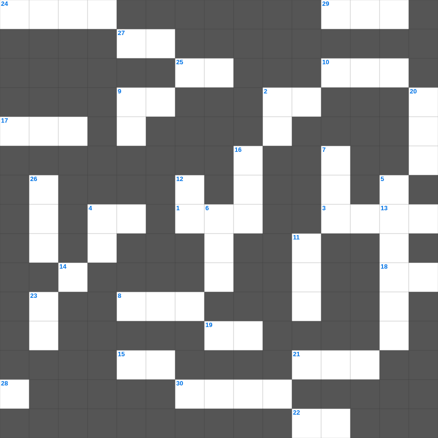

여호수아: 아간의 죄
📌 서비스 정의
십자가로세로는 교회 주보와 주일학교에서 사용할 수 있는 성경 기반 가로세로 퍼즐 서비스입니다. 성경 인물, 사건, 핵심 구절을 바탕으로 제작되었습니다. 온라인 풀이 및 인쇄 기능을 제공합니다.
📖 여호수아란?
여호수아는 모세의 후계자 여호수아가 이스라엘을 이끌어 가나안 땅을 정복하고 지파별로 땅을 나누는 과정을 기록합니다. 총 24장입니다.
📚 여호수아의 주요 사건·주제
요단강을 건넘 · 여리고성 함락 · 아이성 전투와 아간 사건 · 기브온 동맹과 해가 멈춘 전쟁 · 지파별 땅 분배
오늘은 여호수아의 주요 내용을 담은 여호수아 낱말 퍼즐를 준비했습니다. 총 35개의 힌트가 있으며, 주일학교 교재나 성경공부 자료로 활용하기 좋습니다. 무료로 즐기는 여호수아 가로세로 퍼즐을 지금 바로 풀어보세요!

📝 가로 힌트
1. 죽은 지 나흘 만에 살아난 사람
2. 오직 의인은 이것으로 말미암아 살리라
3. 이사악의 아내
4. 주 예수여 이것 오시옵소서
8. 광야에서 엘리야에게 떡과 고기를 물어다 준 새
9. 바다의 물고기와 이것들
10. 바울의 1차 전교 여행 출발지
13. 땅의 짐승과 기는 것(여섯째 날)
15. 나는 마음이 이것하고 겸손하니
17. 이스라엘이 애굽을 탈출한 사건
18. 바울의 고향
19. 내가 누구를 보내며 누가 우리를 위하여 이것할꼬
21. 맥추절 혹은 칠칠절이라 불리는 신약의 절기
22. 보냄을 받은 자라는 뜻
24. 기름 부음 받은 자
25. 네 이웃에 대하여 거짓 이것하지 말라
27. 땅 끝까지 이르러 내 이것이 되리라
29. 바울이 로마로 가기 전 마지막으로 머문 섬
30. 쉬지 말고 이것하라
📝 세로 힌트
2. 지혜의 말씀, 지식의 말씀, 이것
4. 베드로와 안드레의 직업
5. 성령의 불이 임한 장소
6. 노아의 방주에 비가 내린 일수
6. 예수님이 광야에서 시험받으신 기간
6. 예수님이 광야에서 금식하신 일수
7. 함께 가져온 물고기의 마리 수
9. 예수님은 우리의 영원한 이것(길, 진리, 이것)
11. 사자 굴에서도 살아남은 사람
12. 물고기 배 속에서 회개한 선지자
14. 공중에 나는 이것(다섯째 날)
16. 안드레의 형제
20. 여덟 번째 재앙: 모든 채소를 먹어치움
23. 광야에서 이스라엘이 먹은 하늘 양식
26. 종려나무 성읍이라 불리는 가장 오래된 성
28. 공의를 마르지 않는 이것 같이 흐르게 하라
🧑🏫 교회 교육 자료 활용
이 퍼즐은 주일학교 교재 추천 자료로 활용할 수 있고, 주일학교 주보에 넣기 좋은 분량으로 구성되어 있습니다. 수업용 주일학교 교안에 활동지로 붙이거나, 예배 후 복습용 주일학교 공과교재로 바로 사용할 수 있습니다.
🏷️ 키워드
여호수아 낱말 퍼즐, 여호수아, 십자가로세로, 성경퀴즈, 말씀퀴즈, 가로세로퍼즐, 주일학교 교재 추천, 주일학교 주보, 주일학교 교안, 주일학교 공과교재